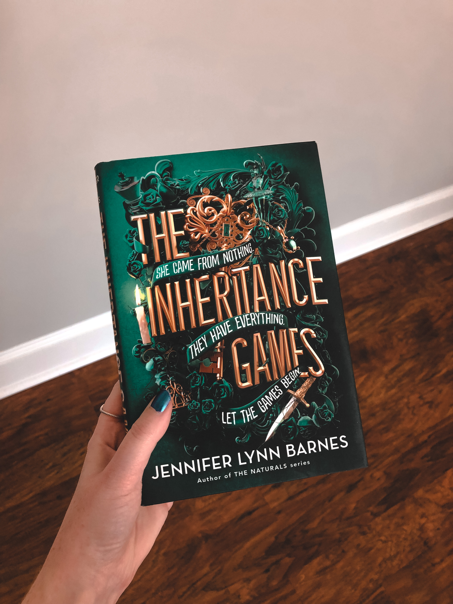
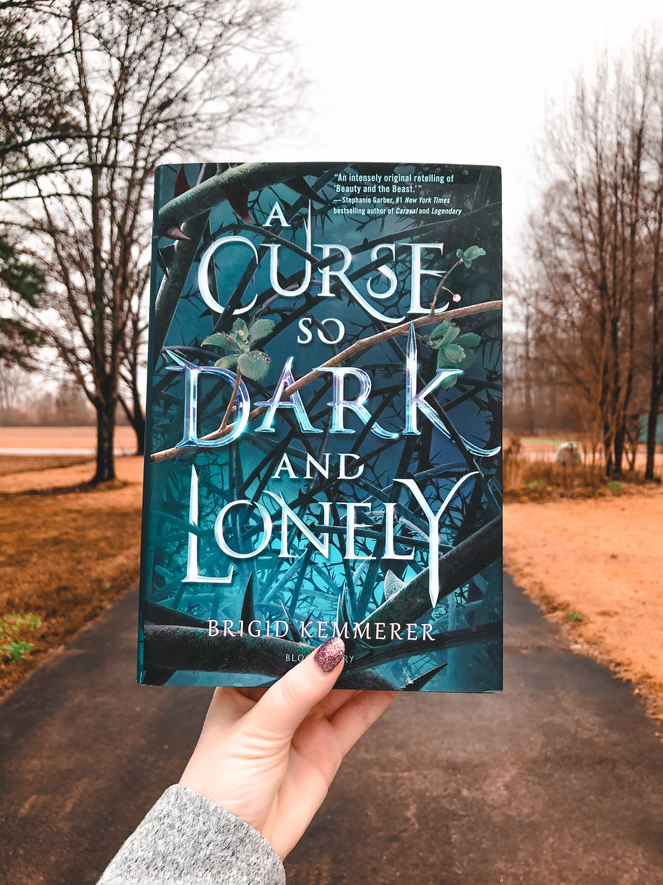

Book Reviews by Maddison
It Ends With Us

5 stars I've always loved Colleen Hoover's books and this one was no exception.
It was so stunning and heartbreaking that I wish I could read it for the first time again.
I had to have a little sob session at the end because, well that ending???
I 100% recommend this book if you're ready to have your heart broken into a million tiny pieces
The Inheritance Games

4.75 stars
Wow, wow, WOW. I really loved this book!! It took me a little bit to get into the story but once I was in, I was IN.
I loved most of the characters: Grayson and Jameson were my favorites, those boys are CHARMING. The plot twists in this were great, I barely say any of them coming.
I know a lot of people compare this to Knives Out, but I only think the setting and very beginning are similar.
I liked the ending and can't wait for the next one!
A Curse So Dark and Lonely

5 stars
Oh my gosh, this book was AMAZING!!
I loved how brave Harper was and how she wasn't going to just sit around and do nothing when something obviously had to be done.
I really loved Rhen too; he was heroic and protective in all the best ways!!